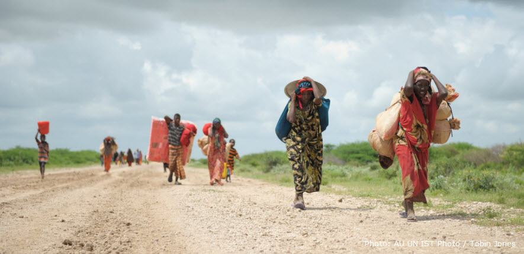
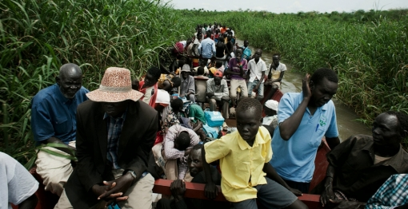
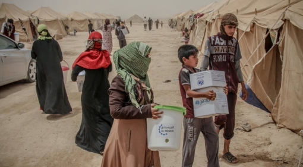
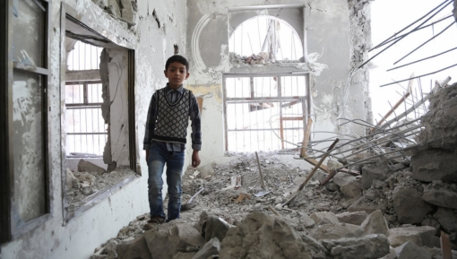

国内避難民
国内避難民(Internally Displaced Persons: IDPs)とは、内戦や暴力行為、深刻な人権侵害や、自然もしくは人為的災害などによって家を追われ、自国内での避難生活を余儀なくされている人々を指します。
2015年には新たに860万人が国内避難民となり、全世界で4,080万人という記録的な数に達しました。また過去8年間を振り返ると、自然災害によって毎年平均2,540万人が避難生活を強いられています。
国内避難を巡る複雑さ
国内避難民支援が時に難しくなるのは、以下の理由によるものです。
- 国内避難民の大多数が、避難民キャンプ以外のコミュニティに身を寄せているため、人道支援を受け取りにくい。特に都市部では、度重なる避難や見つかることを怖れる等、様々な理由により、避難民の特定やニーズの把握が困難となる。
- 子どもたちが最も安定した暮らしと保護を必要とする時に、避難生活が大きなリスクや困難なな変化をもたらすため、子どもたちを心身共に不安定にさせる。また教育の機会を奪われるほか、性暴力や兵士等に強制徴用される等、トラウマを負いかねない経験をすることも多い。
- 取り巻く法的な環境や保護にまつわるリスク、市場へのアクセス、所有するリソースやネットワーク、もともとの脆弱度、支援受け入れコミュニティの姿勢や許容力等、多くの要因によって支援の成果が大きく左右される。
多くの人々はキャンプや、都市部の貧困地区などで、長期にわたって不安定な避難生活を送らざるを得ません。永住できる家も生計を立てるすべもないため、しばしば持続的な解決への展望さえ持てずにいます。
国内避難民が認める持続的な解決とは、(1)自国内のどこか別の場所に落ち着く、(2)現在身を寄せているコミュニティに統合される、(3)元々暮らしていた故郷に帰るのいずれかです。[詳しくは、Framework on Durable Solutions（機関間常設委員会: IASC)を参照]
避難生活が長引く原因は、紛争そのものが長期化したり、政治的解決を見ぬまま膠着状態に陥る場合が殆どです。他方、国内避難の持続可能な解決という目標と、より広範な開発計画との間での調整不足も影響しています。
国内避難問題への取り組み
国内避難民を保護し、その福祉を実現する一義的な責任は、それぞれの国の政府が負います。政府がその責任を果たせない、或いは果たす意思がない場合には、国際社会が国内避難民の保護と支援を確かなものとし、解決策を実現すべく役割を担います。
Guiding Principles on Internal Displacement (国内避難民に関する指導原則)は、国内避難民のニーズに対応するための基礎的な枠組です。既存の国際人権法や人道法で求められている一般的な人権保証に国内避難民も暗に含まれていますが、この指導原則ではそうしたことをしっかりと明示しています。2005年9月には、ニューヨークの世界サミットに参集した各国の代表らも、この指導原則を「国内避難民保護に関する重要な国際的枠組」と認めています。(国連総会決議第60/L.1号, 132, U.N. Doc. A/60/L.1)

解決策のないまま長期の避難を強いられる国内避難民に対し、短期の緊急援助に重点を置いた現在のアプローチのみでは、十分でも持続的でもありません。国内避難民の生計が外部からの支援に依存してしまうような支援者中心の考え方から、国内避難民自らが解決策を見出せるよう支援するアプローチに転換する必要があります。つまり、ただ人道ニーズを満たすだけでなく、国内避難民の尊厳を守り、生計作りや自立を促し、受け入れコミュニティの開発にも貢献するようなアプローチが必要となっているのです。
また、国際社会は人道支援だけで国内避難民問題を解決することは出来ません。開発アクターにより構造的な変化がもたらされれば、当事国の能力構築にもつながります。持続的な解決のためには、人道支援と開発援助の協力が欠かせないのです。
国連の果たす役割
1997年、国連事務総長が、緊急援助調整官の役割の強化等、国連改革の議案を提出しました。この中で国連事務総長は、国内避難民支援のための緊急援助調整官による調整機能についても言及しています。そして国内避難問題についてそれ以上の議論には踏み込まなかったものの、国連総会はこの国連改革案全体に対する支持を表明しました。以降国連総会第3委員会は、常に国内避難民の「保護と支援、その調整における緊急調整官の中心的役割」について強調し続けています (A/RES/70/165)。単独で国内避難民について責任を担う国連機関が存在しないため、緊急援助官の役割は特に重要です。
 実務面ではクラスターシステムの中では、国連難民高等弁務官事務所(UNHCR)が「保護クラスター」の主導機関として、紛争で家を追われた国内避難民の保護努力をリードします。そして国連常駐・人道調整官が、国内避難民対応を含む包括的な人道支援を統括します。UNHCRや国連開発計画(UNDP)、国際移住機関(IOM)、さらには各非政府組織(NGO)も、それぞれ状況に応じて国内避難民を支援・保護しています。またInternal Displacement Monitoring Centre (国内避難モニタリングセンター: IDMC)とJoint IDPs Profiling Service (国内避難民共同プロファイリングサービス:JIPS)は共に、国内避難の状況についての情報と専門知識を有しています。国内避難民に関する国連人権理事会の特別報告者もまた、国連全体にわたり国内避難民が持つ権利を周知させ、政府や主要な関係者に国内避難民の人権保護を訴える役割を担っています。
OCHA の役割
国連人道問題調整事務所(OCHA)は国連安保理やUNHCR、UNDP、国内避難民に関する国連人権理事会の特別報告者や、保護活動に携わるその他のIASC所属機関、国連事務局内の他の関連部局と協力して、国内避難民の保護と支援を推進しています。
「持続可能な開発ための2030アジェンダ」との関係
「持続可能な開発ための2030アジェンダ」では、「誰も置き去りにしない」ことを謳っており、開発の枠組の中で強制移住（強制的に家を追われること）を取り扱っています。また、国内避難民は「特に留意すべき脆弱層」と位置付けられ、アジェンダが実現すれば国内避難問題の持続的な解決に向けた重要な機会ともなります。同様に「文民保護に関する国連事務総長報告(2015年度)」でも、長期化した避難生活に対する支援の必要性が明記されています。
「世界人道サミット」との関係
2016年5月23日と24日にトルコのイスタンブールで開催された「世界人道サミット」は、国連事務総長報告書「人道理念は一つ：責任の共有を」（One Humanity, Shared Responsibility)で提示された、人道への課題を実行に移す第一歩となりました。
特に世界人道サミットで行われた「強制移住に関するハイレベル円卓会議」では、各国政府、ドナー、国際機関、市民団体、民間企業や被災コミュニティの代表が一堂に会し、国内避難など強制移住問題の解決に向けたコミットメントを表明しました。また同サミットを通じて国内避難民の人道ニーズを満たすと同時に長期的な課題に取り組むべく、脆弱性を克服し、また地域コミュニティの開発を支援するため、新たなアプローチが必要であることが広く合意されました。同サミットでは国内避難民支援と持続的な解決のための積極的なコミットメントが数多く表明されましたが、今後これらを推し進め、現場で具体的な変化を起していくためのメカニズムを確立することが重要です。
関連文書/ガイダンス等（英語）>>
国内避難民に関する指導原則（日本語版）＞＞